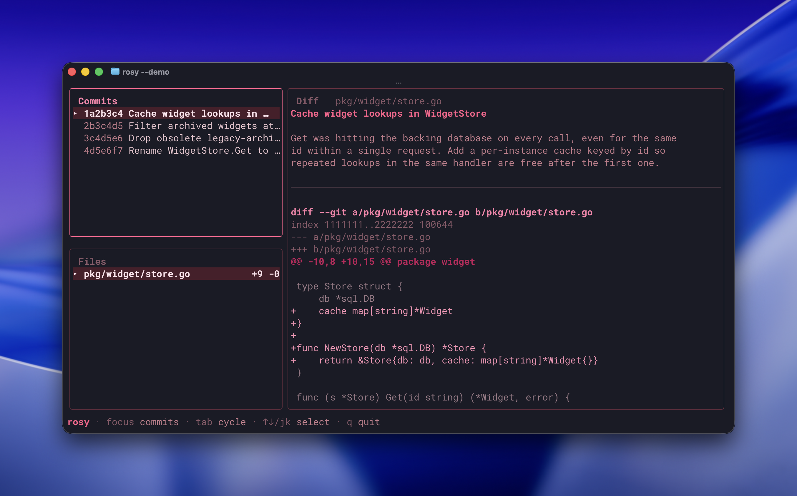

Paste in a GitHub PR, get back the commit history it deserved.
rosy looks at a GitHub PR and asks Claude to redraft its
commit history into what should have been there from the start.
The output is just for display in a pretty TUI, not an actual git rewrite! That would be crazy...
(Unless you press i.)
Inside the TUI, i will attempt to actually apply the
fabricated history to your local branch. A two-stage confirmation
stands between you and regret. The first screen asks
"are you crazy?" It's not rhetorical.
rosy will never force push. It will, however,
git reset --hard. You've been warned with love.

The reconstruction is line-for-line faithful by contract: every added line in the PR must appear exactly once across the fabricated commits, same for removed lines. A deterministic post-check enforces this.
When the muse drifts — duplicating a hunk across two commits, or
inventing a stray line of its own — rosy flags the
divergence in crimson and opens the TUI anyway. This is a fun project,
not a court record. Trust the diffs; treat the prose as a suggestion.